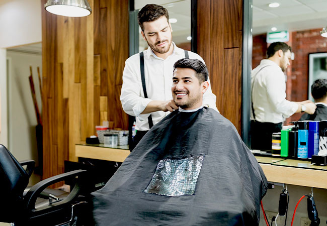

Bienvenidos a Barbers
En Peluquería Barbers, creemos que un buen corte de cabello no solo cambia tu apariencia, sino que también eleva tu confianza y te ayuda a sentirte como mejor te ves. Nuestra barbería es un lugar donde la tradición se encuentra con las últimas tendencias, ofreciendo una experiencia única de estilo y cuidado personal.
Ven y disfruta de un servicio excepcional. ¡Haz tu cita y experimenta lo mejor del cuidado masculino en un solo lugar!
